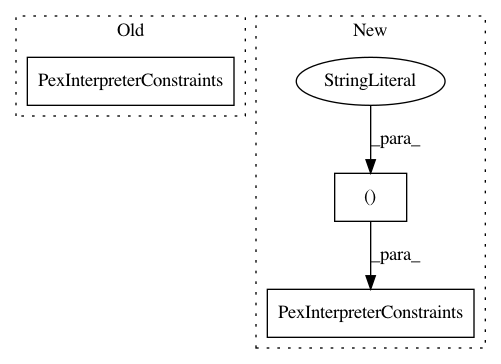

ee98ef6fa797e8f2e64059363a47734d9f409b90,src/python/pants/backend/python/typecheck/mypy/rules.py,,mypy_typecheck,#Any#Any#Any#,114
Before Change
or code_interpreter_constraints.includes_python2()
)
tool_interpreter_constraints = (
PexInterpreterConstraints(mypy.interpreter_constraints)
if use_subsystem_constraints
else code_interpreter_constraints
)
After Change
if not mypy.options.is_default("interpreter_constraints"):
tool_interpreter_constraints = mypy.interpreter_constraints
elif code_interpreter_constraints.requires_python38_or_newer():
tool_interpreter_constraints = ("CPython>=3.8",)
elif code_interpreter_constraints.requires_python37_or_newer():
tool_interpreter_constraints = ("CPython>=3.7",)
elif code_interpreter_constraints.requires_python36_or_newer():
tool_interpreter_constraints = ("CPython>=3.6",)
else:
tool_interpreter_constraints = mypy.interpreter_constraints
plugin_sources_request = Get(
PythonSourceFiles, PythonSourceFilesRequest(plugin_transitive_targets.closure)
)
typechecked_sources_request = Get(
PythonSourceFiles, PythonSourceFilesRequest(typechecked_transitive_targets.closure)
)
requirements_pex_request = Get(
Pex,
PexFromTargetsRequest,
PexFromTargetsRequest.for_requirements(
(field_set.address for field_set in request.field_sets),
hardcoded_interpreter_constraints=code_interpreter_constraints,
internal_only=True,
),
)
mypy_pex_request = Get(
Pex,
PexRequest(
output_filename="mypy.pex",
internal_only=True,
sources=launcher_script,
requirements=PexRequirements(
itertools.chain(mypy.all_requirements, plugin_requirements)
),
interpreter_constraints=PexInterpreterConstraints(tool_interpreter_constraints),
entry_point=PurePath(LAUNCHER_FILE.path).stem,
),
)
In pattern: SUPERPATTERN
Frequency: 4
Non-data size: 3
Instances
Project Name: pantsbuild/pants
Commit Name: ee98ef6fa797e8f2e64059363a47734d9f409b90
Time: 2020-09-24
Author: 14852634+Eric-Arellano@users.noreply.github.com
File Name: src/python/pants/backend/python/typecheck/mypy/rules.py
Class Name:
Method Name: mypy_typecheck
Project Name: pantsbuild/pants
Commit Name: f8a0b0facc8f47067b44832bbab505a20955c328
Time: 2020-09-22
Author: 14852634+Eric-Arellano@users.noreply.github.com
File Name: src/python/pants/backend/python/typecheck/mypy/rules.py
Class Name:
Method Name: mypy_typecheck
Project Name: pantsbuild/pants
Commit Name: 213d4dfdf82b2061c36175b61b55fad01ca07aad
Time: 2021-02-09
Author: 14852634+Eric-Arellano@users.noreply.github.com
File Name: src/python/pants/backend/python/lint/black/rules.py
Class Name:
Method Name: setup_black
Project Name: pantsbuild/pants
Commit Name: c4deac6eef9bedaec4fc6c3260bc596caa91ea61
Time: 2021-02-09
Author: john.sirois@gmail.com
File Name: src/python/pants/backend/python/typecheck/mypy/rules.py
Class Name:
Method Name: mypy_typecheck_partition